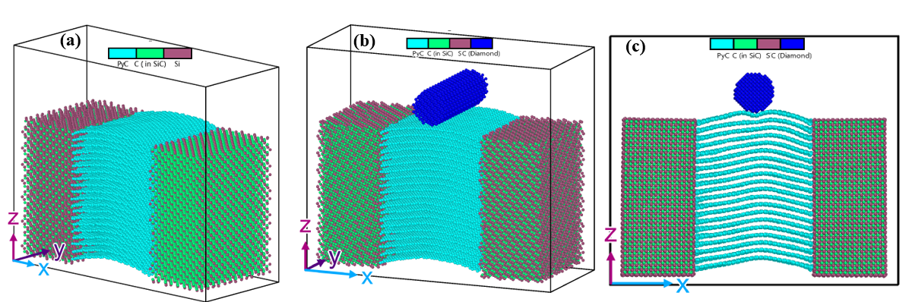
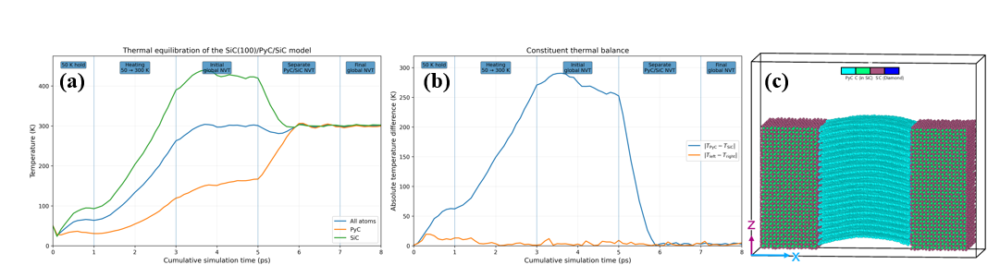
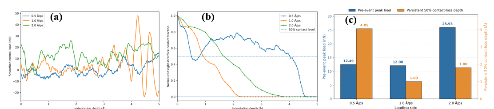
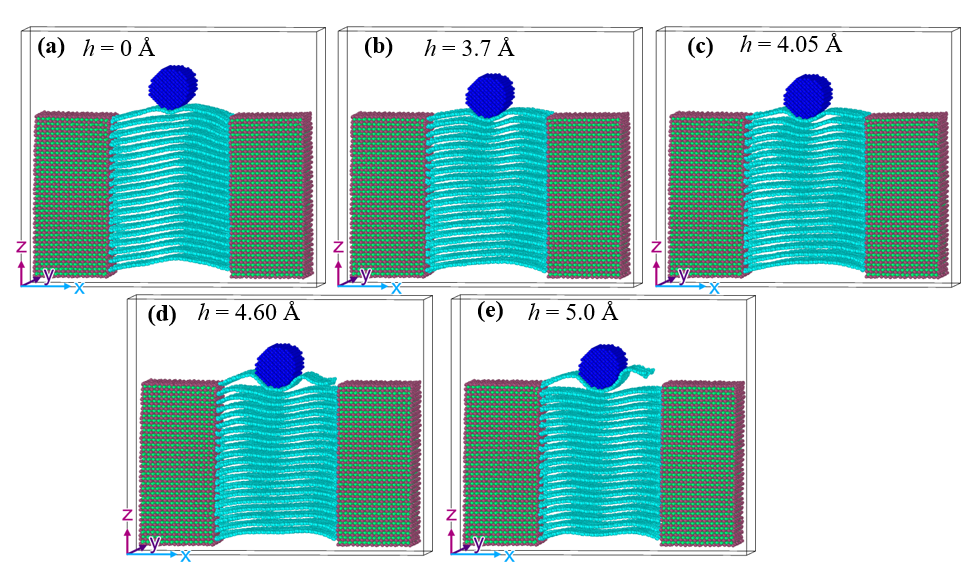
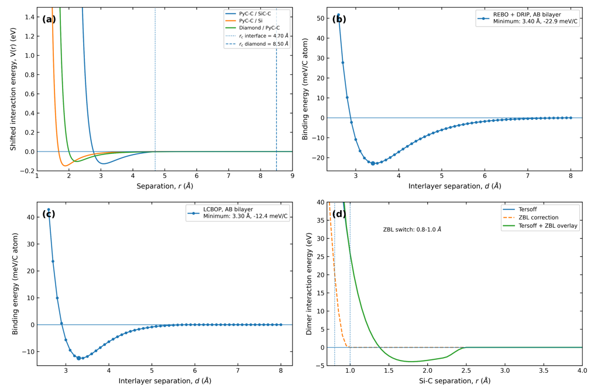
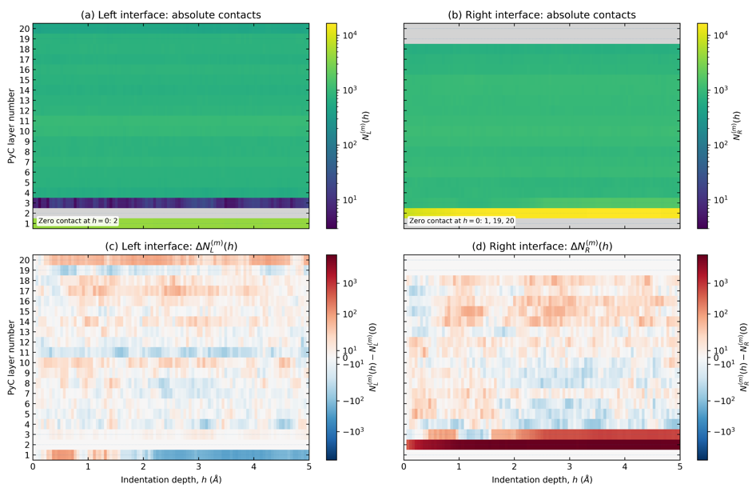

SiC/PyC/SiC Figures and Selected Results
Selected visual results from the atomistic interface-mechanics workflow.
1. Model geometry and indentation configuration

Representative SiC/PyC/SiC atomistic configurations and spherical-indenter setup used to probe local mechanical response.
2. Thermal equilibration validation

Staged thermal preparation and constituent temperature balance prior to mechanical loading.
3. Loading-rate and contact response

Rate-dependent normal load and interface-contact response during indentation.
4. Progressive indentation morphology

Evolution of PyC layer bending and localized deformation with increasing indentation depth.
5. Interatomic-potential validation

Interaction-energy checks for short-range and interlayer force-field descriptions used in the model.
6. Layer-resolved interface contacts

Layer-resolved contact maps showing how left and right SiC/PyC interface populations evolve during indentation.